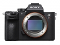

器材库 > 35mm画幅可换镜头数码相机 > α7R III

规格总览
产品类型
35mm画幅可换镜头数码相机
发布日期
2017-10-25
厂家推荐价格
23,999.00 （人民币）
影像规格
影像传感器
Exmor R CMOS
有效像素
4240万
影像处理器
BIONZ X
防抖系统
5轴防抖
镜头和对焦
对焦点
399个相位检测自动对焦点，425个对比度检测自动对焦点
曝光控制
ISO感光度
ISO 100 - 32000（静态图像可扩展至ISO 50 - 102400）
连拍
10张/秒
取景器/显示屏
取景器
Quad-VGA OLED电子取景器
文件输入/输出
存储卡
MS/MS PRO记忆棒, SD/SDHC, SDXC
电源
电池
NP-FZ100
CafeDelMar2018-04-09 22:494.5 分
操作性 4.50功能性 4.50美观性 5.00趣味性 4.50耐用性 4.00性价比 4.00解像力 5.00色彩还原 4.50
匿名网友2018-02-12 11:573.63 分
操作性 4.00功能性 4.00美观性 4.00趣味性 4.00耐用性 2.00性价比 3.00解像力 4.00色彩还原 4.00
匿名网友2018-02-04 00:153.13 分
操作性 3.00功能性 4.00美观性 4.00趣味性 3.00耐用性 3.00性价比 2.00解像力 3.00色彩还原 3.00
透明主唱2017-12-08 01:574.75 分
操作性 4.50功能性 5.00美观性 5.00趣味性 5.00耐用性 5.00性价比 4.00解像力 5.00色彩还原 4.50
透明主唱2017-11-30 03:03
产品图 / 样片
α7R III
评测 / 相关文章
- 详细内容 （存档）
- 两全其美 索尼全画幅微单A7RM3评测 （存档）
- ［试用］索尼A7RM3实拍样张 （存档）
- ［资讯］操控更专业 索尼全画幅微单A7RIII图赏 （存档）
- ［资讯］全能杀手 速评索尼全幅微单A7RIII （存档）
- ［资讯］索尼全画幅微单A7RⅢ发布会实录 （存档）
相关文章
- ［试用］索尼A7RM3实拍样张 （存档）
- ［试用］两全其美 索尼全画幅微单A7RM3评测 （存档）
- ［资讯］操控更专业 索尼全画幅微单A7RIII图赏 （存档）
- ［资讯］破解速度与画质定律 索尼A7RIII发布 （存档）
- ［资讯］全能杀手 速评索尼全幅微单A7RIII （存档）
- ［资讯］索尼全画幅微单A7RⅢ发布会实录 （存档）
- ［行情］索尼A7R3单机身最新促销 （原站已下线）
- ［资讯］多项升级 索尼A7M3、A7RM3固件更新 （原站已下线）
- ［影像］盛夏阿尔卑斯——A9 A7R3风光人物 （原站已下线）
- ［影像］A7R3+5014ZA暗夜精灵女王 （原站已下线）
- ［试用］索尼A7R3--小花小草小姑娘 （原站已下线）
- ［试用］索尼A7R3行摄魔幻中土世界巴塔哥尼 （原站已下线）
- ［试用］索尼A7RM3伦敦行摄 （原站已下线）
- ［影像］携A7R3+24-70GM赴新喀里多尼亚扫片 （原站已下线）
- ［行情］索尼A7RIII限时特价 （原站已下线）
- ［资讯］高感更优秀，A7Ⅲ VS A7RⅢ、GH5 （原站已下线）
- ［试用］索尼A7RM3影棚人像体验 （原站已下线）
- ［试用］A7RM3欧洲行摄:圣家族 （原站已下线）
- ［行情］索尼A7RIII机身限时特价 （原站已下线）
- ［试用］索尼A7R3室内复古唯美写真 （原站已下线）
- ［影像］索尼A7RM3欧洲行摄 （原站已下线）
- ［资讯］外媒公布A7RIII、D850等防滴溅能力 （存档）
- ［试用］全能新武器 携A7R3赴仙本那试拍 （原站已下线）
- ［资讯］ACR和LR更新支持索尼A7RIII （原站已下线）
- ［资讯］DPReview公布2017年年度相机 （存档）
- ［资讯］外媒对索尼A7RIII评价较高 （原站已下线）